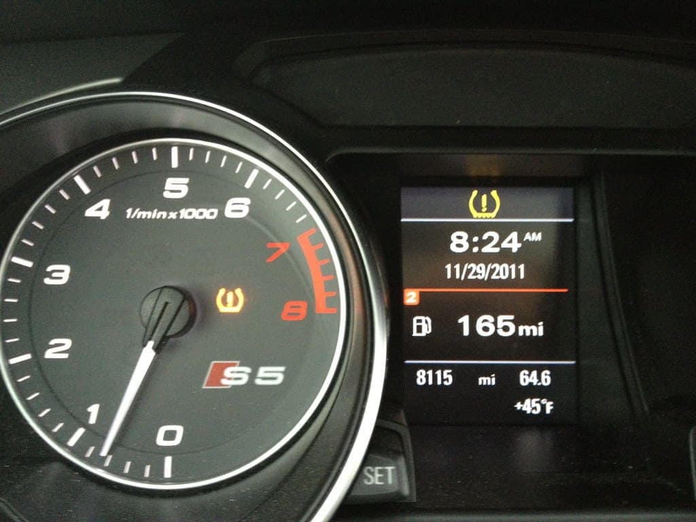
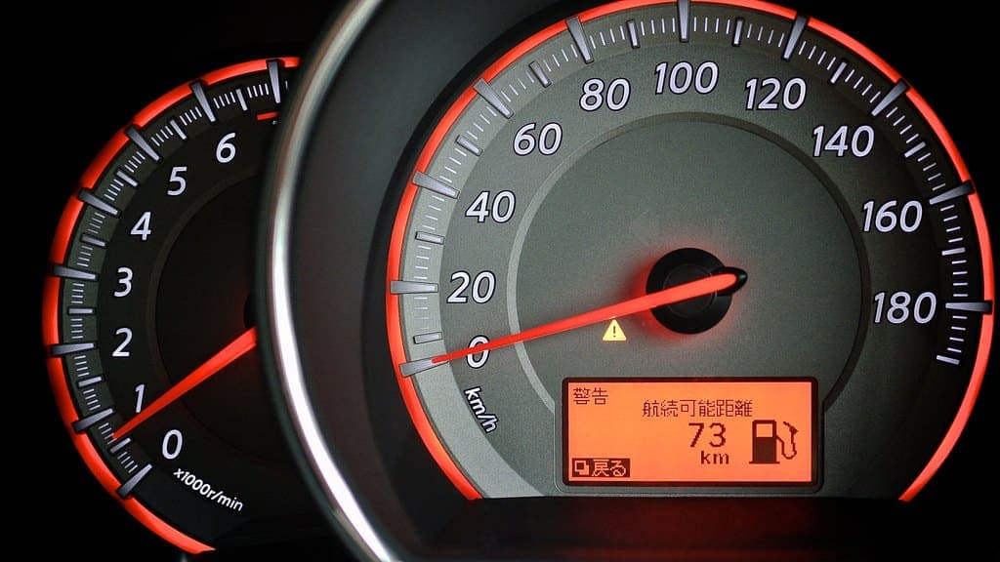
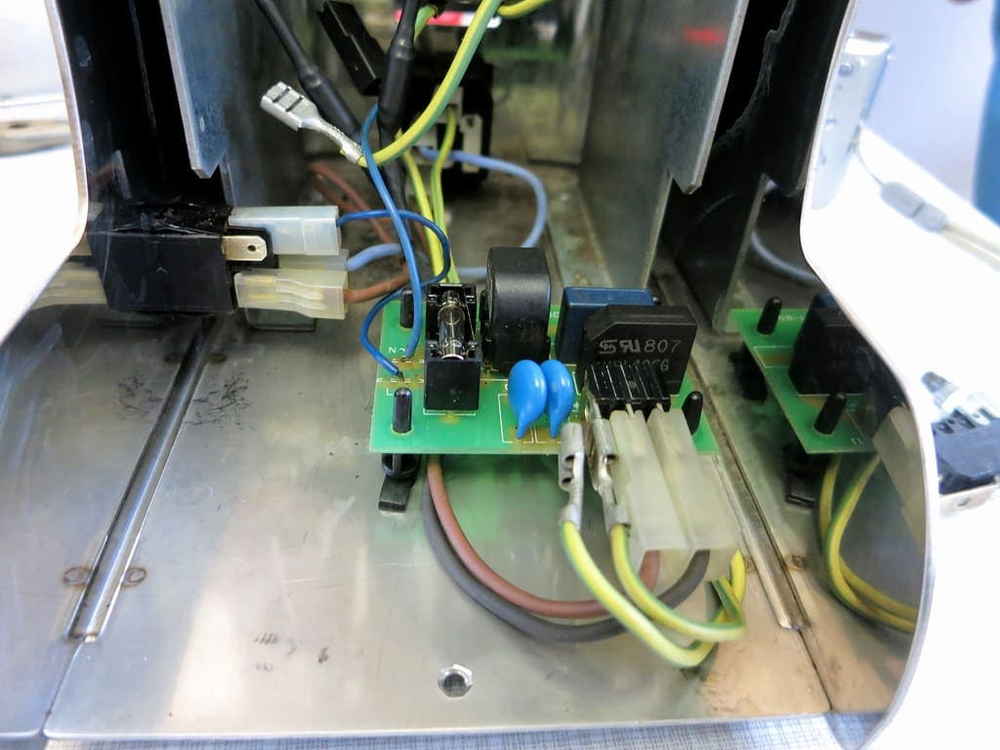
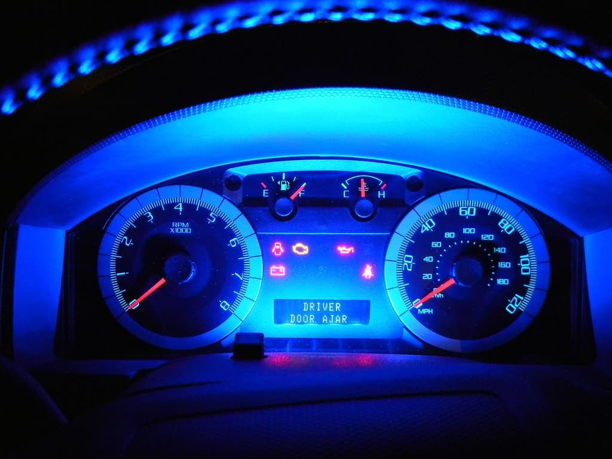

Sistema elétrico
Curtos, falhas de iluminação e problemas de bateria e alternador.
OBD Diagnóstico eletrônico de precisão
Scanner automotivo de última geração para identificar exatamente o que está errado — sem “tentativa e erro” trocando peça por peça.

Diagnóstico antes do reparo
Conectamos o scanner à porta OBD do carro e lemos todos os módulos eletrônicos. Toque em Iniciar leitura para ver uma simulação.
Serviços
Curtos, falhas de iluminação e problemas de bateria e alternador.
Diagnóstico e reparo de módulos, bicos e sensores.
Recarga de gás, higienização e reparo de componentes.
Teste, substituição e instalação com garantia.



Orçamento enviado junto com o laudo. Nenhum serviço é feito sem a sua aprovação.
Transparência
Você recebe o laudo no WhatsApp, com o código de cada falha, o que ele significa e o que recomendamos — separando o que é urgente do que pode esperar.
Agendamento
Escolha um horário. Confirmamos pelo WhatsApp em seguida.